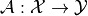
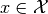
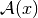
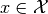
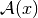
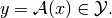

Operator¶
-
class
odl.operator.operator.Operator(*args, **kwargs)[source]¶ Bases:
objectAbstract mathematical operator.
An operator is a mapping

between sets
 (domain) and
(domain) and  (range). The evaluation of
(range). The evaluation of  at an element
 is denoted by 
and produces an element in :
at an element
 is denoted by 
and produces an element in :
Programmatically, these properties are reflected in the
Operatorclass described in the following.Abstract attributes and methods
Operatoris an abstract class, i.e. it can only be subclassed, not used directly.Any subclass of
Operatormust have the following attributes:It is highly recommended to call
super(MyOp, self).__init__(domain, range)in the__init__()method of any subclassMyOp, wheredomainandrangeare the arguments specifying domain and range of the new operator. In that case, the attributesOperator.domainandOperator.rangeare automatically provided by the parent classOperator.In addition, any subclass must implement the private method
Operator._call(). It signature determines how it is interpreted:In-place-only evaluation:
_call(self, x, out[, **kwargs])In-place evaluation means that the operator is applied, and the result is written to an existing element
outprovided, i.e._call(self, x, out) <==> out <-- operator(x)Parameters:
- x
Operator.domainelement An object in the operator domain to which the operator is applied
- out
Operator.rangeelement An object in the operator range to which the result of the operator evaluation is written.
Returns:
None (return value is ignored)
Out-of-place-only evaluation:
_call(self, x[, **kwargs])Out-of-place evaluation means that the operator is applied, and the result is written to a new element which is returned. In this case, a subclass has to implement the method
_call(self, x) <==> operator(x)Parameters:
- x
Operator.domainelement An object in the operator domain to which the operator is applied
Returns:
- out
Operator.rangeelement-like An object in the operator range holding the result of the operator evaluation
Dual-use evaluation:
_call(self, x, out=None[, **kwargs])Evaluate in-place if
outis given, otherwise out-of-place.Parameters:
- x
Operator.domainelement An object in the operator domain to which the operator is applied
- out
Operator.rangeelement, optional An object in the operator range to which the result of the operator evaluation is written
Returns:
None (return value is ignored)
Notes
If
Operator._callis implemented in-place-only or out-of-place-only and theOperator.rangeis aLinearSpace, a default implementation of the respective other is provided.Operator._callis allowed to have keyword-only arguments (Python 3 only).The term “element-like” means that an object must be convertible to an element by the
domain.element()method.
- Attributes
adjointAdjoint of this operator (abstract).
domainSet of objects on which this operator can be evaluated.
inverseReturn the operator inverse.
is_functionalTrueif this operator’s range is aField.is_linearTrueif this operator is linear.rangeSet in which the result of an evaluation of this operator lies.
Methods
_call(self, x[, out])Implementation of the operator evaluation.
derivative(self, point)Return the operator derivative at
point.norm(self[, estimate])Return the operator norm of this operator.
-
__init__(self, domain, range, linear=False)[source]¶ Initialize a new instance.
- Parameters
- domain
Set The domain of this operator, i.e., the set of elements to which this operator can be applied
- range
Set The range of this operator, i.e., the set this operator maps to
- linearbool, optional
If
True, the operator is considered as linear. In this case,domainandrangehave to be instances ofLinearSpace, orField.
- domain
- x